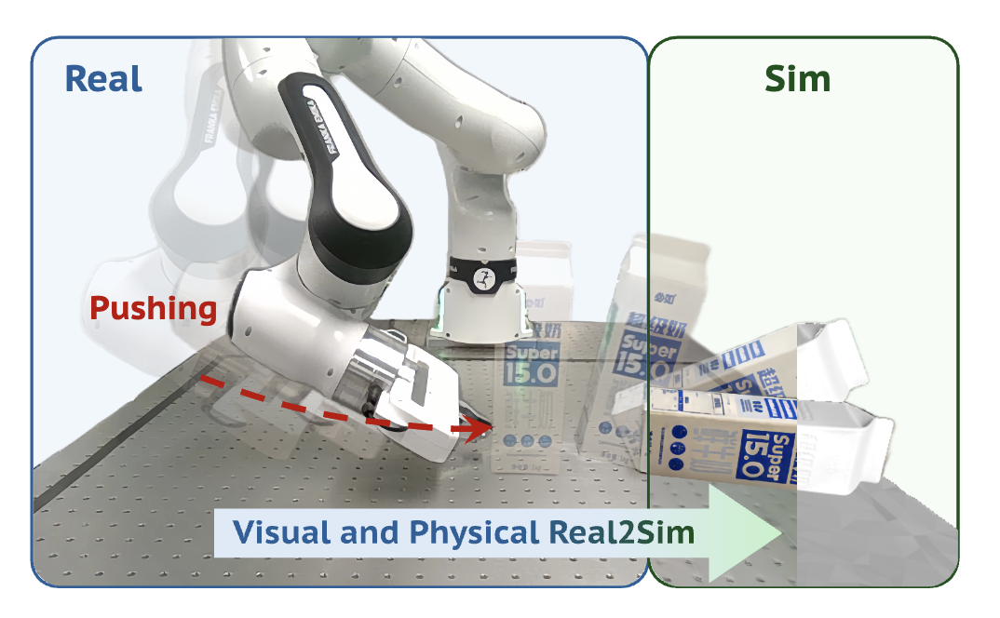
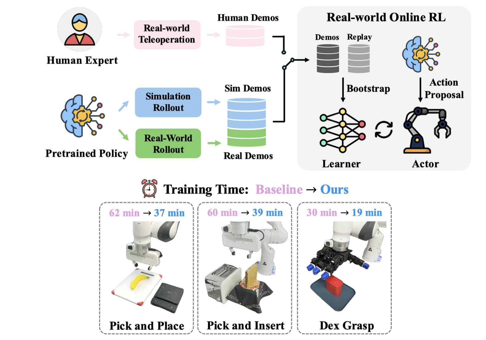
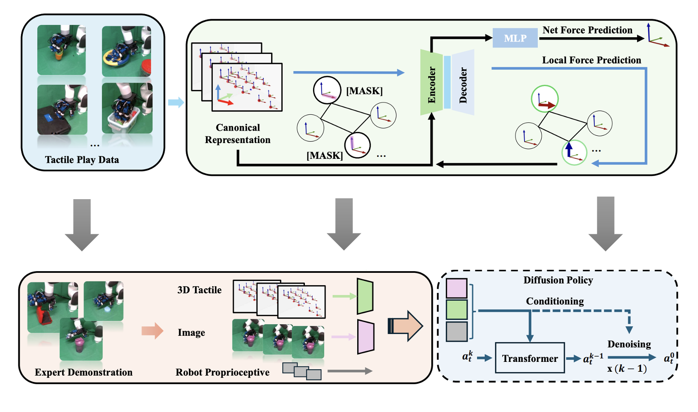

|
Jinzhou Li I am a Robotics PhD student at Duke University, advised by Prof. Xianyi Cheng. Prior to this, I obtained my master's degree from Cornell University, and bachelor's degree from the University of Vermont. I was fortunate to be working with Prof. Maha Haji at Cornell and Prof. Daniel Hastings at MIT. I also had the opportunity to work with Prof. Hao Dong at Peking University. Always happy to chat about cool ideas and potential collaborations. Drop me an email anytime! Google Scholar / Github / CV / LinkedIn / WeChat |

jinzhou.li [at] duke [dot] edu
|
{kind=link}
News
|
ResearchMy research focuses on enabling robots to achieve human-level dexterity in complex environments by integrating multisensory intelligence with advanced control strategies and machine learning. * Equal Contribution |

|
ClutterDexGrasp: A Sim-to-Real System for General Dexterous Target Grasping in
Cluttered Scenes
Zeyuan Chen*, Qiyang Yan*, Yuanpei Chen*, Tianhao Wu, Jiyao Zhang, Zihan Ding, Jinzhou Li, Yaodong Yang, Hao Dong Preprint, 2025 [paper] [website] [code] We propose the first close-loop sim-to-real system for general dexterous grasping in cluttered scenes. |
|

|
TwinAligner: Visual and Physical Real2Sim2Real
All-in-one for Robotic Manipulation
Hongwei Fan*, Hang Dai*, Jiyao Zhang*, Jinzhou Li, Qiyang Yan, Yujie Zhao, Yuxuan Lai, Hao Tang, Hao Dong Preprint, 2025 [paper] [website] A novel Real2Sim2Real system addressing both visual and physics gaps. |

|
AdapTac-Dex: Adaptive Visuo-Tactile Fusion with Predictive Force Attention for Dexterous Manipulation
Jinzhou Li*, Tianhao Wu*, Jiyao Zhang**, Zeyuan Chen**, Haotian Jin, Mingdong Wu, Yujun Shen, Yaodong Yang, Hao Dong IEEE/RSJ International Conference on Intelligent Robots and Systems (IROS 2025) [paper] [website] [code] A future force-guided attention fusion module that adaptively adjusts the weights of visual and tactile features. |
|

|
SimLauncher: Launching Sample-Efficient Real-world Robotic Reinforcement Learning via Simulation Pre-training
Mingdong Wu*, Lehong Wu*, Yizhuo Wu*, Weiyao Huang, Hongwei Fan, Zheyuan Hu, Haoran Geng, Jinzhou Li, Jiahe Ying, Long Yang, Yuanpei Chen, Hao Dong IEEE/RSJ International Conference on Intelligent Robots and Systems (IROS 2025) [paper] We combine the strengths of real-world RL and real-to-sim-to-real approaches to accelerate policy learning. |
|

|
Canonical Representation and Force-Based Pretraining of 3D Tactile for Dexterous Visuo-Tactile Policy Learning
Tianhao Wu, Jinzhou Li*, Jiyao Zhang*, Mingdong Wu, Hao Dong IEEE International Conference on Robotics and Automation (ICRA 2025) [paper] [website] [code] A novel 3D tactile data representation and force-based pretraining to enhance dexterous manipulation learning. |
Research Experience
|
Experience
|
Teaching
|
Talks
|
Professional Activities
|
|
May, 2025. Design and source code from Jon Barron's website. |